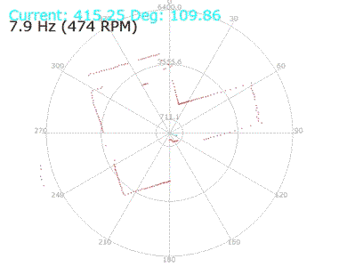
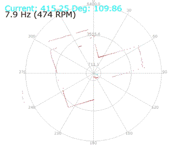
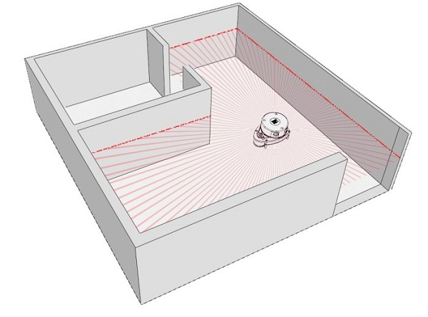
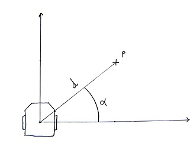
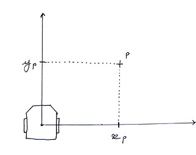
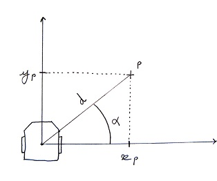
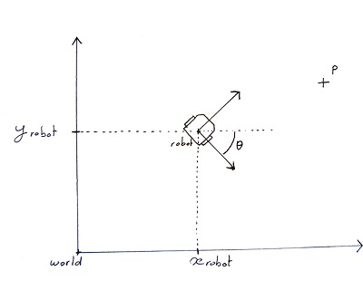
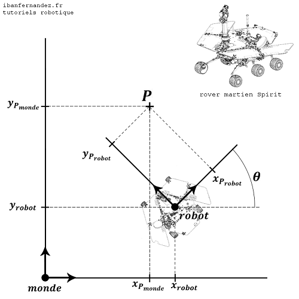
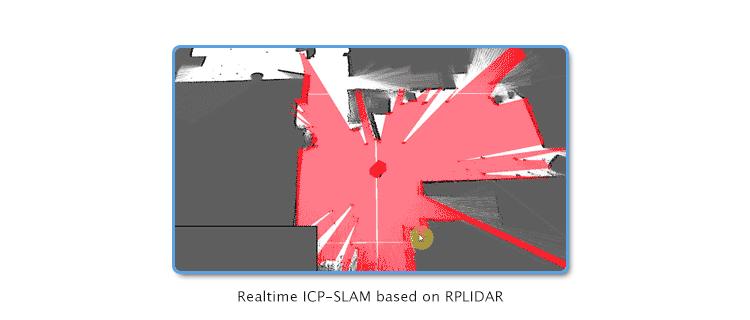

Lidar et mapping : créer une carte du monde autour du robot en scannant l'espace
Un Lidar est un capteur de distance laser qui tourne sur lui-même pour détecter les obstacles tout autour de lui. Il sert aux robots à repérer les murs, les portes et autres éléments des alentours.
 

Tout d’abord, nous allons voir comment le robot interprète les données du Lidar pour situer les obstacles autour de lui.
Une fois que nous aurons compris le fonctionnement du Lidar, nous allons passer à la construction de la carte de l’environnement du robot.
1 - Le fonctionnement du Lidar
Le capteur de distance laser tourne sur lui-même à 360°. À chaque degré, il prend une mesure de la distance de lui à l’obstacle en face, et renseigne l’ordinateur de son angle de rotation ainsi que de la distance mesurée. Cela crée un point ayant pour coordonnées un angle et une distance. On apelle ce type de coordonnées des coordonnées polaires.

Nous créons un repère avec le Lidar au centre. Ce sera notre carte. L’objectif est de placer chacun des points repérés par le Lidar sur ce repère. Ils représenterons les obstacles sur la carte. Nous devons donc convertir les coordonnées des points du lidar de la forme polaire (un angle et une distance) à la forme cartésienne (un X et un Y).

Pour convertir des coordonnées polaires en coordonnées cartésiennes, nous utilisons la formule mathématique suivante :


Exemple
Le lidar détecte un obstacle à 5 mètres lorsqu'il a tourné de 53°.
Nous avons donc un point P de coordonnées polaires P(5, 53°).
La position du point P sur l'axe X est :
X(p) = 5 * cos(53°) = 3
La position du point P sur l'axe Y est :
Y(p) = 5 * sin(53°) = 4
Les coordonnées cartésiennes du point P sont donc P(3, 4)
2- La construction de la carte : le mapping
Si le robot connait sa position sur la carte et qu’il détecte un obstacle par rapport à lui, il doit pouvoir situer cet obstacle sur la carte. Inversement, si on ordonne au robot de se rendre en un lieu précis de la carte, il doit pourvoir situer ce lieu par rapport à lui.
Voici un exemple qui traduit de façon mathématique la situation :
Exemple
Le robot sait que ses coordonnées dans le repère Monde sont robot(5, 5, -45°), et il a repéré un point P dans son propre repère ayant pour coordonnées Probot(2, 5).
Il en déduit, après avoir calculé, que les coordonnées du point P dans le repère du monde sont Pmonde(10, 7).

Nous avons les coordonnées du point P par rapport au robot, et les coordonnées du robot par rapport au monde. Pour avoir les coordonées du point P par rapport au monde, l'idéal serait d'avoir une formule du type :

Ce truc magique existe, c'est une matrice de passage.

Voici la formule de la matrice de passage :

Exemple

Le robot martien Spirit sait qu’il se trouve à l’emplacement  dans le monde (ici le monde est Mars). La notation
mathématique des coordonnées du robot est de la forme
dans le monde (ici le monde est Mars). La notation
mathématique des coordonnées du robot est de la forme  .
.
Le robot détecte un obstacle (peut-être un martien) nommé P, ayant pour coordonnées  dans son repère robot.
dans son repère robot.
Pour replacer le martien par rapport à Mars, c’est-à-dire exprimer le point P du repère robot au repère monde, on utilise la matrice de
passage  .
.
On met le point  sous forme de matrice pour pouvoir le multiplier par la matrice de passage :
sous forme de matrice pour pouvoir le multiplier par la matrice de passage :

On applique la matrice de passage sur le point  pour
trouver
pour
trouver  :
:

Nous avons donc les coordonnées du point P par rapport au monde  .
.
{kind=link}
Maintenant, le robot sera capable de se déplacer dans une carte, de capter les obstacles autour de lui et de mettre à jours la carte en y intégrant les obstacles captés.

Implémentation dans le robot
En cours.
Le code informatique
En cours.
Références
En cours.